| Name
|
Map
|
Description
|
Associated Skill
|
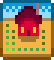
Standard Farm
|
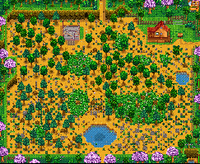
|
- The majority of this map is farming land, ideal for crops and animals.
- The biggest contiguous (tillable) rectangular area is 63 x 31 (1953) tiles.
- The number of tillable tiles on this map is 3427, with 235 non-tillable but buildable tiles.
|
 Farming Farming
|
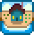
Riverland Farm
|
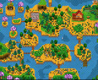
|
- Water significantly decreases the overall farming area.
- Players start with a Fish Smoker.
- Fishing is viable on this farm:[1]
- The number of tillable tiles on this map is 1578, with 516 non-tillable but buildable tiles.
- 6 bushes can be chopped down with an upgraded Axe (copper or better).
|
 Fishing Fishing
|
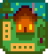
Forest Farm
|

|
- The farm border is made of trees and foliage, just like in the Secret Woods.
- Many bushes can be found on this map, including berry bushes. 16 bushes can be chopped down with an upgraded Axe (copper or better).
- The western clearings spawn 8 renewable Large Stumps (Hardwood), seasonal forage items, and unique Weeds that always drop Mixed Seeds. The possible forage items are:[2]
- When fishing:[1]
- 5% of the time (modified by daily Luck), players will catch Woodskip. The exact formula is 0.05 + Daily Luck. This means that if the daily luck is at or below -0.05, there is no chance of catching a Woodskip. With maximum luck (0.125, only possible with the Special Charm), each cast has a 17.5% chance to hook a Woodskip.
- 45% of the rest of the time, players will catch pond and river fish, i.e., fish that are found in Cindersap Forest.
- Otherwise, players will catch only trash.
- Additional ponds and grass areas decrease the overall farming area.
- The number of tillable tiles on this map is 1413, with 1490 non-tillable but buildable tiles.
|
 Foraging Foraging
|
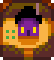
Hill-top Farm
|
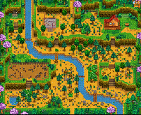
|
- The southwest hill-top spawns Stones, Ore nodes, and Geode nodes depending on the player's Mining level.
- Each day the farm attempts to spawn several nodes. The first node has a 100% chance to spawn, and each subsequent node has 75% the chance of the last. Once one node fails that chance to spawn, no more spawn attempts are made that day. In a cleared quarry, an average of 2.4 nodes will spawn per day. For each attempt, if there is something already on the selected tile, nothing spawns. Otherwise:[3]
- See the Quarry Spawn Rates table below.
- There is always a 15% chance to spawn an artifact spot.
- There is a chance to spawn one of the three geode nodes (Geode, Frozen Geode, Magma Geode). The geode node spawned is affected by the player's Mining level:
- If the player's Mining level is below 5, a Geode Node will always be spawned. If the player's Mining level is between 5 and 7 inclusive, there is an equal chance of spawning a Geode or Frozen Geode Node. If the player's Mining level is at least 8, there is an equal chance of spawning each.
- There is always a chance to spawn a Copper node.
- If the player has at least Mining level 4, there is a chance to spawn an Iron node.
- If the player has at least Mining level 7, there is a chance to spawn a Gold node.
- If the player has at least Mining level 10, there is a chance to spawn an Iridium node.
- Otherwise, a Stone node is spawned.
- The mining area may sometimes be blocked by a Large Stump, a Large Log, or a Boulder, making it impossible to enter until the player has upgraded their Axe or Pickaxe to steel to be able to break it.
- Additional cliffs and a stream decrease the overall farming area.
- 2 bushes can be chopped down with an upgraded Axe (copper or better).
- When fishing:[1]
- 50% of the time, players will catch forest river fish, i.e., fish that are found in the Cindersap Forest river.
- 50% of the time, players will catch only trash.
- The number of tillable tiles on this map is 1648, with 930 non-tillable but buildable tiles.
|
 Mining Mining
|
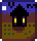
Wilderness Farm
|
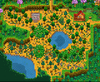
|
- Monsters spawn at night (scales with the player's Combat level).
- When fishing:[1]
- 35% of the time, players will catch lake fish, i.e., fish that are found in The Mountain lake.
- 65% of the time, players will catch only trash.
- Additional cliffs and ponds decrease the overall farming area.
- The number of tillable tiles on this map is 2131, with 444 non-tillable but buildable tiles.
|
 Combat Combat
|
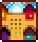
Four Corners Farm
|
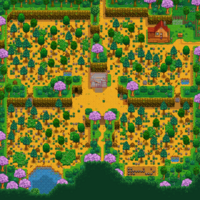
|
- The farming area is split by cliffs into four distinct areas, each reminiscent of some of the other Farm Maps.
- Top left: Forest Farm. This quadrant has a small grassy area containing a Large Stump, and weeds here can transform into the unique ones that always drop mixed seeds, the same as on the Forest Farm.
- Top right: Standard Farm. This quadrant has the most farming space.
- Bottom left: This quadrant has a pond. Players have a 50% chance of catching forest pond fish, i.e., fish that are found in the Cindersap Forest pond.[1]
- Bottom right: Hill-top Farm. This quadrant contains a small quarry that spawns Rocks and Ore and Geode nodes depending on the player's Mining level.[3]
- Additional cliffs and ponds decrease the overall farming area.
- The number of tillable tiles on this map is 2952, with 562 non-tillable but buildable tiles.
|
Multiplayer
|
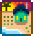
Beach Farm
|
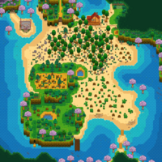
|
- Good foraging and fishing, and a lot of open space. Sometimes, supply crates wash up on shore.
- Both forest and beach foragables may spawn. Season-specific beach foragables can spawn year-round.
- Sprinklers don't work in the sandy soil.
- There is a contiguous patch of 202 non-sandy tiles (10x20 plus 2) where sprinklers can be placed. Utilizing this area completely requires clearing the trees and large logs (with a steel axe or better). There are 28 additional non-sandy tiles scattered around the map (mostly around ponds) which may also benefit from sprinklers.
- Intended for "seasoned players", not as a first farm. A typical strategy of increasing crop fields and crafting large quantities of quality sprinklers won't work on this farm.
- Large open areas can be used to build Barns, Coops, Fish Ponds, or Sheds. Grass can grow on sandy soil.
- There are several bushes on this map, with multiple able to yield berries. 15 bushes can be chopped down with an upgraded Axe (copper or better).
- When fishing:[1]
- 15% of the time, players will catch Seaweed.
- 5.1% of the time, players will catch one of Oyster, Coral, Mussel or Cockle. Chances for each item are equal.
- 52.73% of the time, players will catch ocean fish, i.e., fish that are found in The Beach.
- 27.17% of the time, players will catch trash.
- The number of tillable tiles on this map is 2700, with 1928 non-tillable but buildable tiles.
|
Foraging
Fishing
|
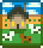
Meadowlands Farm
|
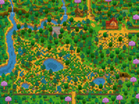
|
- Has a chewy blue grass that animals love.
- Players start with a Coop and two chickens. The chickens are randomly named.
- Instead of receiving 15 Parsnip Seeds from Mayor Lewis, the player instead receives 15 pieces of Hay from an unknown source.
- When fishing from the river or a large pond:[1]
- 40% of the time, players will catch forest pond fish, i.e., fish that are found in the Cindersap Forest pond.
- 60% of the time, players will catch trash.
- The number of tillable tiles on this map is 2066, with about 2141 non-tillable but buildable tiles.
|
Farming
|